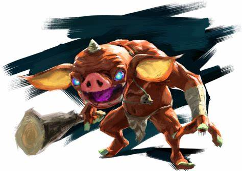

Les Bokoblins
Les Bokoblins sont des ennemis communs dans BOTW. Ils sont souvent trouvés en groupes et peuvent utiliser diverses armes.
Caractéristiques des Bokoblins :
- Petite taille
- Utilisation d'armes variées
- Comportement agressif
Galerie des Bokoblins
